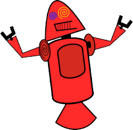

historia do mascote do android
O mascote do Android, conhecido como Android Robot ou Bugdroid, foi criado por Irina Blok em 2007 como o ícone do sistema operacional móvel Android da Google. Seu design simples e minimalista, um robô verde com cabeça oval e antenas, tornou-se um símbolo amplamente reconhecido. O Bugdroid representa a natureza de código aberto e colaborativa do Android, ganhando popularidade entre a comunidade de desenvolvedores e usuários. Ao longo dos anos, o mascote foi adaptado em variações temáticas para diferentes versões do sistema, como o Android 2.3 Gingerbread e o Android 4.4 KitKat. O Bugdroid também inspirou uma variedade de produtos e brindes relacionados. Em suma, o mascote Android Robot é um ícone icônico que personifica a identidade visual do sistema operacional Android.
Primeira versão
O Android 1.0, lançado em setembro de 2008, foi a primeira versão do sistema operacional móvel Android pela Google. Ele trouxe funcionalidades essenciais como chamadas telefônicas, mensagens e navegação web. Possuía interface com barra de status, dock de aplicativos e multitarefa. A loja de aplicativos não estava presente. O T-Mobile G1 (HTC Dream) foi o primeiro dispositivo Android. Embora limitado, estabeleceu a base para o sistema operacional, impulsionando a evolução futura, que incluiu a Google Play Store e recursos avançados. O Android 1.0 marcou o começo de uma trajetória que levou ao sucesso global do sistema operacional.
Essa é a primeira versão do mascote , batizados em homenagem ao seu criador: seriam os Dandroids
O Ultimo Mascote
O mascote verde do Android, também conhecido como Android Robot ou Bugdroid, foi criado pela designer Irina Blok em 2007. Seu design simples e versátil foi escolhido como o símbolo do sistema operacional Android da Google. O mascote rapidamente se tornou reconhecível e foi adotado pela comunidade de desenvolvedores e usuários. Ele representava a natureza de código aberto do Android e sua colaboração. Variações do Bugdroid foram usadas em eventos e promoções. Após o Android 10, a Google abandonou a prática de associar mascotes a cada versão. O mascote verde do Android deixou uma marca duradoura na identidade visual do sistema operacional.

Quem criou o android?
Irina Blok é uma designer gráfica nascida na Rússia, conhecida por sua criação do mascote verde do Android, o "Android Robot" ou "Bugdroid". Ela trabalhou na Google e foi a responsável pelo design do logotipo original do Android. Sua criação se tornou um ícone icônico que simboliza o sistema operacional Android em todo o mundo. Através do Android Robot, Irina Blok deixou um legado duradouro na história do design de identidade visual. No entanto, informações mais recentes ou detalhes sobre sua carreira após a criação do Android Robot podem não estar incluídas em minha base de dados, que foi atualizada pela última vez em setembro de 2021.